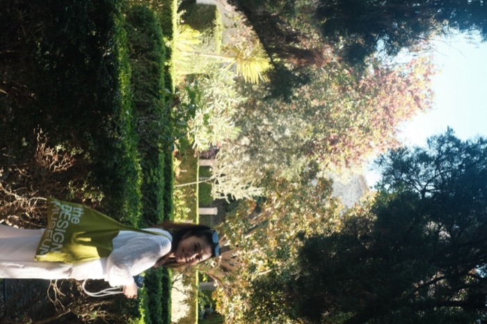
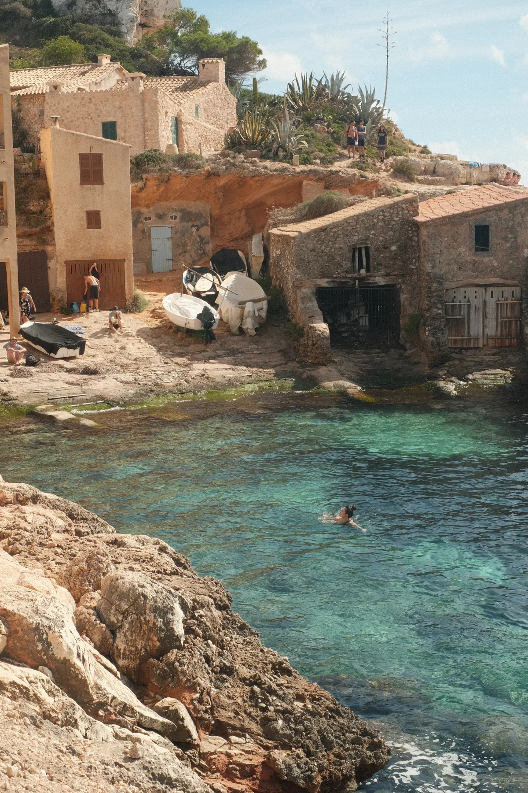
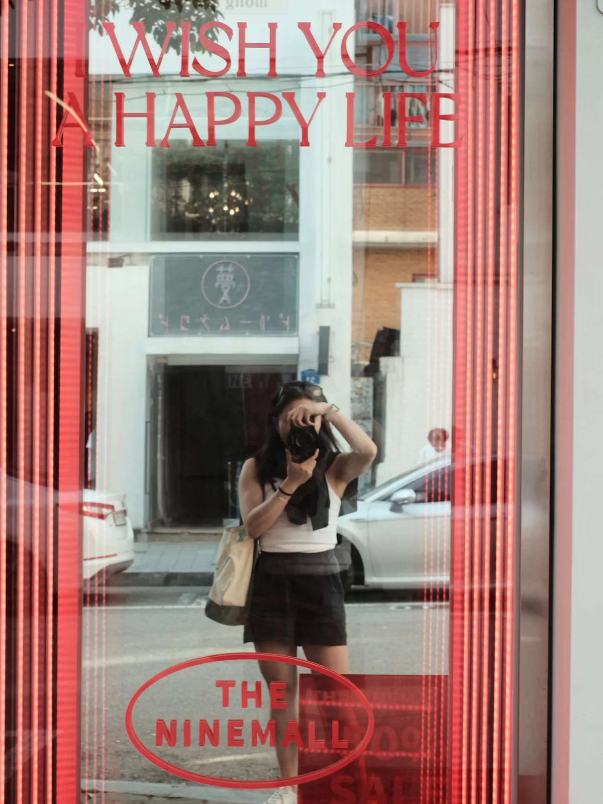
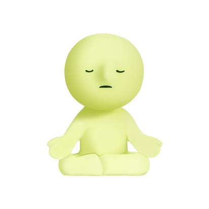
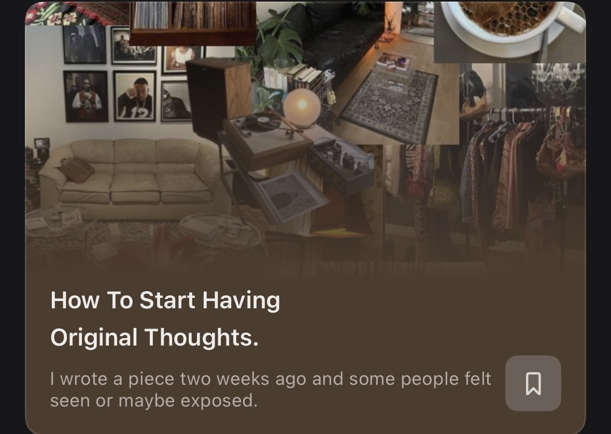

I'm a senior product designer with 8 years of experience, currently based in Hong Kong (though I spent most of my young adult years in Vancouver, Canada). I fell into fintech/crypto 6 years ago and got hooked on turning complicated ideas into something simple — I think you don't really understand a concept until you can explain it simply.
My process is never linear. It usually starts with me asking "wait, why are we doing this?" before touching a single screen — I like to really understand what a PM's trying to solve, not just take the ask at face value. From there I go digging: auditing our existing flow, checking out what competitors are doing, gathering enough context to land on something I actually believe in.
A bit more legwork upfront, but worth it.



(01)Everything
is a win if the goal is to experience

(03)
(06)